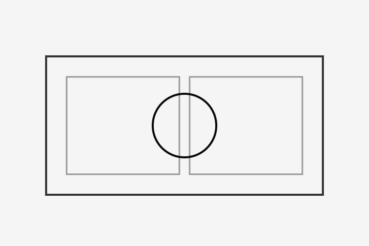
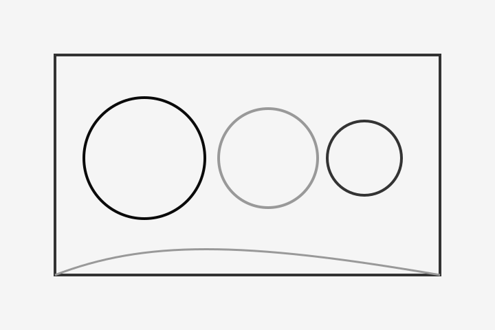
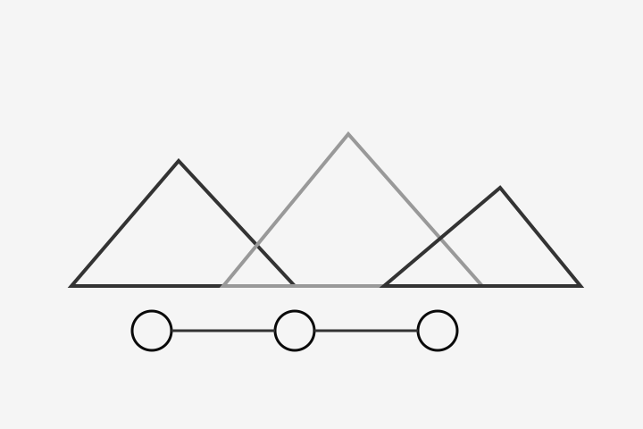

寮生活のリズム
生活リズムを自分で整えながら、他者と空間を共有することでコミュニケーション力を育てます。
画像素材未提供のためプレースホルダーを表示しています。Campus
神山まるごと高専は全寮制。日中の学習だけでなく、生活の時間も含めて互いに学び合う環境をつくっています。 ここでは、キャンパスと寮生活のイメージを3つの視点で紹介します。
Life in Residence
一人で完結しない課題に向き合うため、生活の場でも対話・協力・自己管理を実践します。 学びの継続性を高める生活基盤として寮が機能します。

生活リズムを自分で整えながら、他者と空間を共有することでコミュニケーション力を育てます。
画像素材未提供のためプレースホルダーを表示しています。
授業で得た知識をプロジェクトに接続し、試作とフィードバックを重ねる実践的な学習環境です。
画像素材未提供のためプレースホルダーを表示しています。
神山町の地域資源や人との接点を活かし、課題発見から実装までを行う学外連携の機会があります。
画像素材未提供のためプレースホルダーを表示しています。